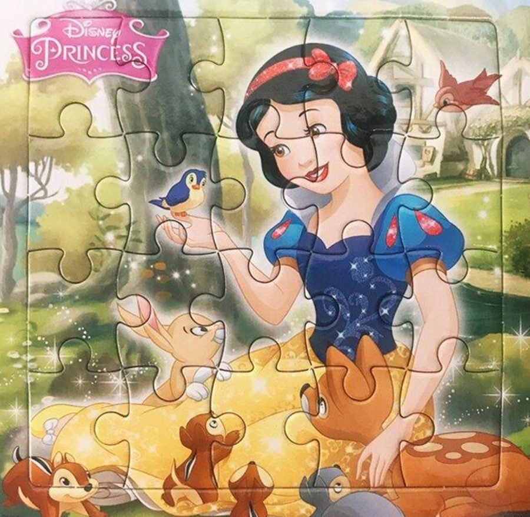
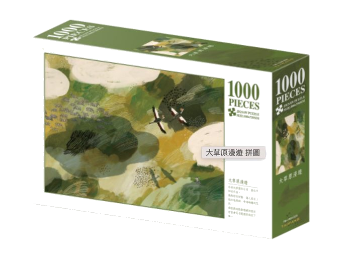
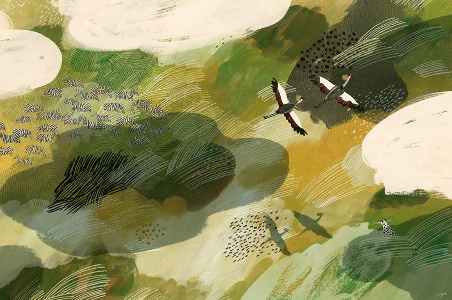
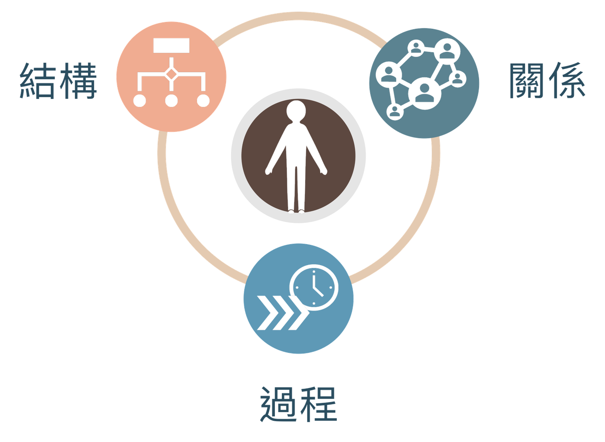
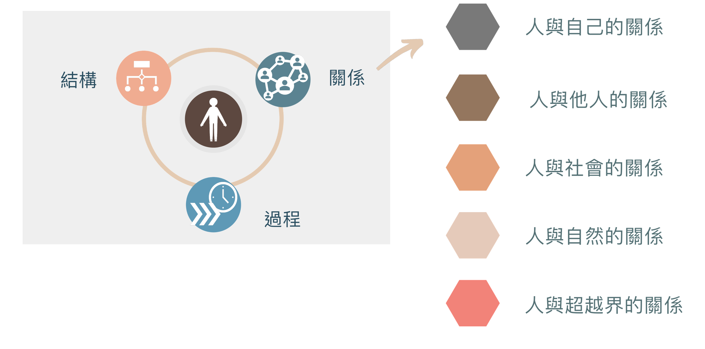
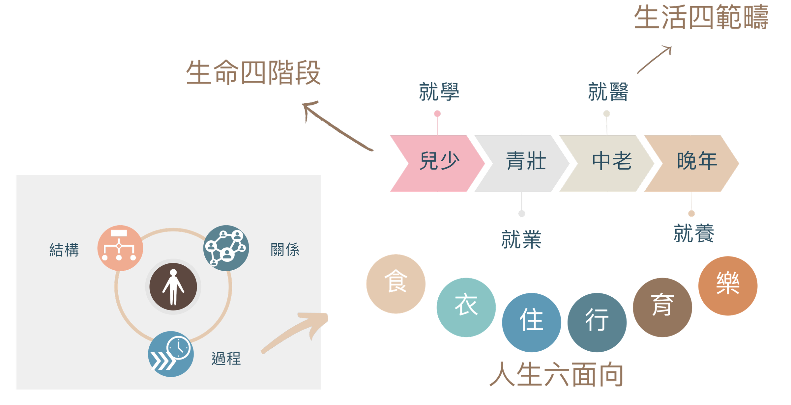
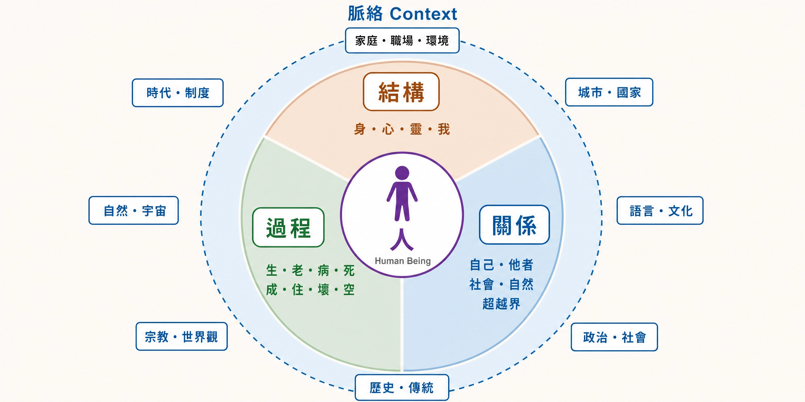

人的獨特與尊嚴
人學探索（一）
在拆解「人是什麼」之前，先問一個更前面的問題：我們為什麼會想追問自己？
知識讓我們活得下去、活得更好——這是知識最直接、最實用的一面。
但人不只為了用而求知。我們會為了「想知道」本身而追問，哪怕它一點也不「有用」。
而在所有追問之中，最深的一個，是對自己的追問：那個正在求知的「我」或「人」，究竟是什麼？
你不會馬上想到——但仔細看，每一門學問，最終都在說著關於「人」的某一件事。
從醫學、心理學，到最遙遠的天文學，都藏著對人的理解。
「再看那個小點。那就是這裡，那就是家，那就是我們。
每一個你愛過的人、每一個你認識的人……都在這粒懸浮於陽光中的塵埃上。」
引文出自卡爾・薩根《黯淡藍點》（Pale Blue Dot: A Vision of the Human Future in Space, 1994）；照片為航海家一號 1990 年自約 60 億公里外回望地球所攝。連天文學，最後也把我們帶回這個問題：在這粒塵埃上的人，是什麼？
要探索人，第一個難題不是答案，而是——這麼多面向，該從哪裡開始？

但它不是那種一眼能看穿、幾十片就拼完的簡單拼圖。


面向繁多、彼此糾纏，甚至比你想像中最難的那幅還要複雜。身體、心理、靈性、關係、時間、文化、歷史……每一片都真實，卻沒有一片能單獨代表整張圖。
在近一萬年的人類歷史中，我們首次進入一個人自身徹底成為問題的時代，在這個時代中，人不再知道他是什麼，同時也知道他不知道自己是什麼。
Wir sind in der ungefähr zehntausendjährigen Geschichte das erste Zeitalter, in dem sich der Mensch völlig und restlos problematisch geworden ist, in dem er nicht mehr weiß, was er ist; zugleich aber auch weiß, dass er es nicht weiß.
馬克斯・謝勒（Max Scheler, 1874–1928），德國哲學家，現代哲學人學的開創者。中譯：孫效智。
剪不斷，理還亂——這麼多面向，我們到底該從哪裡開始探索起？
先給人學一個定義，再看它為什麼注定是一門哲學。
請注意：這個定義本身，就很有哲學性。它問的不是某個器官、某段行為，而是「人之為人」的整體。
人學固然關心人的部分，但也關注整體，特別是部分與整體的相互關係——使得人學具高度哲學性而成為哲學人學。
哲學人學的工作，是跨學科、跨立場、跨宗教地把各部分整合起來，看見完整的人。
任意地或選擇性地只從人性的某些面向來討論人，從而忽略其他的面向。
只挑一面講人，對人的理解就會變得片面。
朱利安・尼達－呂梅林（Julian Nida-Rümelin, 1954–），德國哲學家，主張跨科際人學。
誕生於西方殖民時期，以「原始社會」為研究對象，探索人類的起源、生物體質，以及多元的文化與語言。
同中有異，異中有同。人與人之間在文化與個性上差異極大，但我們仍能相互理解與溝通，因為我們有共同的人性。
人既有共通的人性，又有獨特的個性、社會性、文化性與歷史性。
共通性：人和動物、和 AI，差在哪裡？
獨特性：每一個人，為什麼不可取代？
最後問：人的尊嚴從哪裡來？
用四個向度看人：結構、關係、過程、脈絡。
再問：人如何在有限之中超越？
人之所以異於禽獸者幾希。——那「幾希」，到底是什麼？
先從相異處找人性：人有什麼，是動物沒有的？
各組由一位同學掃碼，送出你們列出的「人與動物的差異」。
黑猩猩把草莖修整好，伸進蟻丘「釣」白蟻。
黑猩猩會照鏡子，檢查額頭上被偷偷塗上的記號。
不同的黑猩猩群體，有 39 種各自代代相傳的行為。
珍古德 1960 年於坦尚尼亞貢貝的觀察（In the Shadow of Man, 1971）；Gallup, Science 167 (1970)；Whiten et al., Nature 399 (1999)。
「人之所以異於禽獸者幾希，庶民去之，君子存之。舜明於庶物，察於人倫，由仁義行，非行仁義也。」
——《孟子・離婁下》
人是擁有 logos（理性、語言）的動物，能分辨善惡、正義與不義；人也天生是城邦的動物，要在共同生活中才能圓滿。
——《政治學》第一卷第二章
現代哲學人學開創者
哲學所有核心的問題：人是什麼，人在存有中、在世界裡、在神內究竟有怎樣的地位？
哲學人學的主要倡議者
提出「離心位置」（exzentrische Positionalität）的人學主張：自我中心與離心。
主張跨科際人學
以經驗為基礎的人學，取消自然與人文科學的劃分，反對只從生物學理解人。人是本質未固定、向世界開放的存在。
人學的問題是任意門
任意地或選擇性地只從人性的某些面向來討論人，從而忽略其他的面向。
只有「情感衝動」，沒有中心意識。
本能、聯想記憶、實踐智力，但被自己的環境綁住。
精神（Geist）：不受衝動與環境束縛，向世界開放。
Max Scheler, Die Stellung des Menschen im Kosmos（《人在宇宙中的地位》，1928）。
活在自己的中心裡，活在當下。
也活在中心，卻能站到中心之外看自己：人是一個身體，又擁有一個身體。
所以人會反省過去、籌劃未來，也永遠有一種無法完全安頓的張力。
Helmuth Plessner, Die Stufen des Organischen und der Mensch（《有機物的階段與人》，1928）。
從生物學看，人沒有專門化的器官，也沒有固定的本能。
Arnold Gehlen, Der Mensch. Seine Natur und seine Stellung in der Welt（《人：他的本性及其在世界中的地位》，1940）。
人是「此在」（Dasein）：一種關切自身存在的存在者。
人會不斷追問自己存在的意義是什麼，會追問為何是存在而不是虛無。
Martin Heidegger, Sein und Zeit（《存在與時間》，1927），§4。
你們組刷剩的清單，和這幾位哲學家的答案有什麼重疊？
他們說的特徵——精神、站到自己旁邊、本質未固定、追問存在——會不會也被動物研究推翻？
當執行成本趨近於零，定義問題、做出判斷、培養品味，成為人最後的競爭力。
可以外包思考，但不能外包「理解」。
傳統上用來分辨人與動物的理性、語言、工具、創作，今天 AI 大多也做得到。
把你們清單上剩下的每一項，再問一次：AI 做得到嗎？
被動物刷掉的、被 AI 刷掉的、兩個都刷不掉的——剩下的，才是候選答案。
被動物刷掉的、被 AI 刷掉的都拿掉，寫下你們組留下來的答案。
根據剛才找到的人之獨特，正面說出人性到底是什麼。
限 100 字以內。送出之後，全班投票選出目前最好的定義。
由一位同學代表送出本組的定義。
人有專屬於人的理智、意志與情感，而這些特徵皆從屬於一個完整的、統一的人，使人能行一切動物所不能行之事，成為一個有理智、有意志自由的能動主體。
人因此才有了動物所不能企及的文化世界、道德世界，以及知識世界。
同中有異，異中有同。
導演說，這樣才能聚焦我們的共同點。
《HUMAN》（2015），2015 年 9 月於聯合國大會廳首映；全片於 YouTube 免費開放。
我本來是去拍風景的，卻被那張臉、被他的話語攫住了。
一架直升機在馬利故障，這位空拍攝影家和一位村民聊了整整一天。那位村民唯一的抱負，是餵飽他的孩子。
轉引自「七十億個他者」（7 milliards d'Autres）法文官方網站之導演自述（網際網路檔案館 2010 年存檔）；中譯為本課所譯。
第 2 題 你挑的三個人，處境天差地遠。他們有什麼共同的地方？
第 3 題 把甲的經歷放到乙身上，還說得通嗎？是什麼讓他們各自成為「他自己」？
第 4、5 題留到下週。
所謂賦權，就是擁有選項，並且有能力從那些選項中選擇。
富有意味著你有更多的自由度……你會有更多更廣的選擇的空間。
動物有選項嗎？AI 有選項嗎？
《WOMAN》（2019）5:18–6:05，中譯為本課所譯；《HUMAN》Haiyan 訪談。〔影片待製作〕
沒有人能代替另一個人死去。
別人可以替我去赴死，卻不能替我承擔我的死。每一個人的存在，都不可替代。
Martin Heidegger, Sein und Zeit（1927），§47：Keiner kann dem Anderen sein Sterben abnehmen.
從「人是什麼？」到「人的價值是什麼？」
《What Would You Do?》（ABC）中文字幕版，8:59。〔待選定三分鐘片段〕
人的尊嚴是什麼？
尊嚴是否應該考慮身份地位、國族種族、富貴貧窮？
由一位同學代表送出本組的討論精華。
人的尊嚴不可侵犯。尊重及保護此項尊嚴，為所有國家權力之義務。
Die Würde des Menschen ist unantastbar. Sie zu achten und zu schützen ist Verpflichtung aller staatlichen Gewalt.
智愚賢不肖、人種、膚色、階級，這些人與人之間的差異，都不能影響人作為位格的尊嚴。
德意志聯邦共和國基本法第 1 條第 1 項（德國聯邦司法部 gesetze-im-internet.de）；中譯為本課所譯。
無論是你自己還是別人，都要永遠同時當作目的，絕不只是當作手段。
有價格的東西，可以用別的等價物替代；超越一切價格、沒有等價物的，才有尊嚴。
Immanuel Kant, Grundlegung zur Metaphysik der Sitten（《道德形上學之基礎》，1785），AA IV 429、434；中文為本課意譯。
《HUMAN》裡，一位從伊拉克戰場回來的美國老兵說：他是一個人，不是復仇的工具。
《HUMAN》clip #15〈Remembering what makes us human〉，2:13，英語。〔影片待製作繁中字幕〕
如果 AI 沒有尊嚴，它缺的是什麼？
當代哲學人學必須保持開放傾聽態度，進行跨科際、跨宗教與跨立場之對話，但人的理性、自由與責任亦應予以捍衛，不應任意被解消。
Julian Nida-Rümelin 的主張；孫效智〈哲學人學〉（2021）。
W6（10/14）我是誰？——在關係、變化與超越之中
靈修週記②
課前作業③的第 4、5 題，下週上課會用到。
在關係、變化與超越之中
人學探索（二）
傳統存有學提出「結構、關係、過程」三個向度來理解存有，孫效智加上「脈絡」。四個向度，把人看全。
要把「人」看全，可以沿著四個向度展開——它們像四個提問角度，缺一不可。
身、心、靈、我——人是由什麼組成的？
自己、他者、社會、自然、超越界。
生、老、病、死；成、住、壞、空。
家庭、職場、城市、國家；語言、文化、政治、社會、歷史。

結構、關係、過程——這三個向度不是分開的欄位，而是同一個人的三種看法，彼此交疊。
看一個人的「結構」（身心靈），一定牽動他的「關係」；他的關係，又在「時間過程」中不斷變化。三者交會處，才是活生生、完整的人。
本質具不可選擇的先存性：人性、天命之性、存在意義。
人是理性動物、靈肉合一的存在、23 對染色體。
透過選擇，人不斷形塑自己的獨特本質。
先探索與定錨意義，才能活出與實現意義。
存在與本質在時間中的辯證共在：操則存，舍則亡。
人自身是由什麼組成的？
肉身化的存在——我們透過身體感知世界、與世界相遇；不是「機器裡的幽靈」，身與心本就交織。
理性與感性、思考與情感、意志與渴望——那個會判斷、會愛、會掙扎的內在世界。
統整身心、指向意義與超越的主體性——那個追問「我為何存在」、朝向圓滿的「我」。
身、心、靈統整於那個始終同一的「我」。
你最常從哪一個面向回答自己是誰？哪一個面向，你幾乎沒有寫？
自己、他者、社會、自然、超越界。

人是「在世存有」（In-der-Welt-sein）。
人不是先孤立地存在，再去和世界發生關係；人始終在與人、與物打交道的關係之中。世界不是擺在眼前的對象，而是我們生活的場域。
Martin Heidegger, Sein und Zeit（1927），§12。
把他者當作對象或工具來對待。
把他者當作獨立的主體，全心相遇。
凡真實的人生，皆是相遇。
Martin Buber, Ich und Du（《我與你》，1923）：Alles wirkliche Leben ist Begegnung.
〈你的善良，是整個故事裡最美的主角〉，3:01。從主體到互為主體：你在影片裡看見了怎樣的一種人與人的關係？
Robert Waldinger, "What Makes a Good Life? Lessons from the Longest Study on Happiness"（TED, 2015），12:47。〔待選定三分鐘片段〕
電影《分手男女》（The Break-Up, 2006）爭吵片段，4:38。〔待選定片段、製作繁中字幕〕
影片中相愛的兩人，為何會相互傷害？
與陌生人的關係、與親密的人的關係，有什麼相同、有什麼不同？
由一位同學代表送出本組的討論精華。
人不是靜止的照片，而是一段展開中的旅程。

生、老、病、死；成、住、壞、空——時間，是人學無法迴避的一維。
黑珍珠和小彩虹的悲劇，是如何發生的？
變化中，他們是否有著不變的追求？承諾應該存在嗎？
我們如何在變化中通向幸福，而不是悲劇？
珍妮・威利斯（Jeanne Willis）文、湯尼・羅斯（Tony Ross）圖，《蝌蚪的諾言》（Tadpole's Promise, 2003）。
人，生於天地宇宙之間，所為何來？
活是偶然，死卻必然。
正因為有限、正因為會結束，「這一生所為何來」才成為每個人都躲不掉的大哉問。
我們並非自願來到世上，而是被「拋」進一個特定的時代、家庭與文化。這是我們的有限。
儘管被拋，人仍能向著未來的可能性籌劃自己，在選擇中形塑自我。
Martin Heidegger, Sein und Zeit（1927），§29、§31。
家庭、職場、城市、國家；語言、文化、政治、社會、歷史。
《HUMAN》拿掉了受訪者的姓名、國家、職業，說這樣才看得見共同的人性。
拿掉一個人的名字、國家與職業，我們看見的是更真實的人，還是更抽象的人？
那些讓一個人與眾不同的處境、選擇與經歷，是不是他身上「具體的人性」？
由一位同學代表送出本組的討論精華。
好的變化，才能稱之為超越。
知道得更多、理解得更深。
從另一個角度看同一件事。
走出自己原本的樣子。
當命運交給你一顆酸檸檬，你要想辦法把它做成一杯可口的檸檬汁。
舉出一、兩個觀點超越的例子。
在超越的過程中，你自己的內在發生了什麼變化？
人可以被奪走一切，只有一樣東西奪不走：人最後的自由——在任何處境中選擇自己的態度，選擇自己的路。
Viktor E. Frankl, Man's Search for Meaning（《活出意義來》）；中文為本課所譯。
在認識、觀點、自我的超越之外，還有更大的超越嗎？
你認為，人的超越達到什麼程度，是最高的狀態？
價值的超越，終極的超越——這是接下來兩週「終極關懷」要談的。
人之特殊就在於，人雖來自於物，卻能超越於一切物之上，人是生命存在，卻又超越了生命的侷限。人就是這樣一種彷彿來自兩個世界、生活在兩個天地，既近於禽獸而又類於天使，身上充滿了「二律背反」式矛盾，既「是其所是」而同時又「是其所不是」的那種存在。
高清海；轉引自孫效智〈哲學人學〉（2021）。
走過四個向度，我們回到起點的那個命題——人學，最終要服務的，是人生。

生命教育五個核心內涵，就是幸福人生的五把鑰匙；人學探索，是它們共同的地基：
W7（10/21）進入終極關懷——什麼是美好人生？
請完整觀賞電影《一路玩到掛》，依作業說明作答。